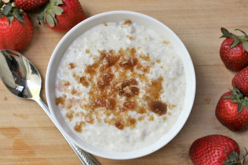

Stove Top Oatmeal

Description
Oatmeal so creamy it's like tapioca! You will absolutely love this recipe. This is how oatmeal was meant to be!
Ingredients
- 1 cup oats
- 3 cups water
- 1 pinch salt
- 1 cup half-and-half cream
- ¼ cup brown sugar, or to taste
Directions
- Just before going to bed, combine the oats and water in a slow cooker. Set on Low, cover, and let cook
overnight.
- In the morning, stir in the salt and half-and-half. Scoop into bowls, and sprinkle brown sugar over the top.